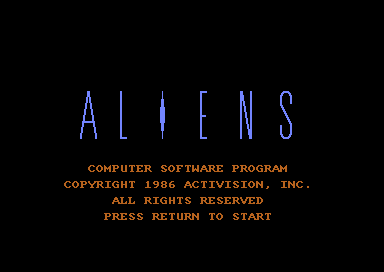
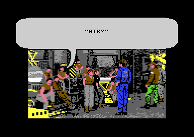
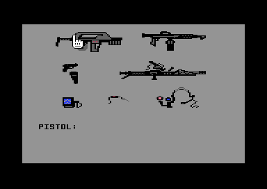
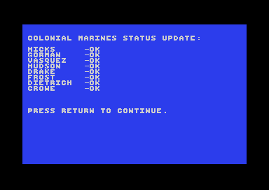
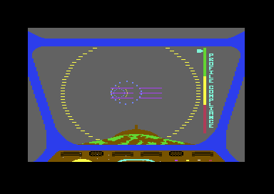
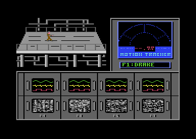
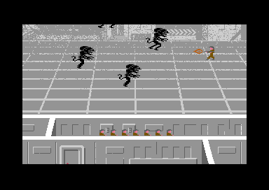
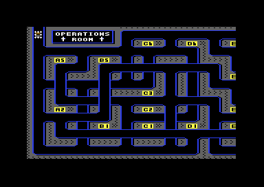
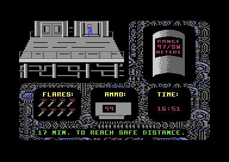
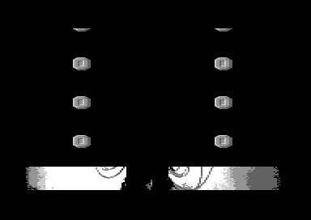

<meta charset="utf-8">
<meta name="viewport" content="width=device-width, initial-scale=1">
<title>{{title}}</title>
<link rel="preconnect" href="https://fonts.googleapis.com">
<link rel="stylesheet" href="https://fonts.googleapis.com/css2?family=Lato:wght@400;700;900&family=IBM+Plex+Mono:wght@400;500&display=swap">
<link rel="stylesheet" href="reference/aliens-page.css">
<!-- tabs -->
<header class="hero">
  <p class="eyebrow">{{platform}} · {{year}} · {{publisher}}</p>
  <h1>{{title}}</h1>
  <p class="sub">Six levels, each a different game, joined by pages of the film's story. Here is how each one is played, and what decides it in the code.</p>
</header>
<main class="wrap" data-part="engine">
<section id="title">
  <p class="fig">01 · The title</p>
  <h2 class="t">The credits keep time with the music</h2>
  <p class="lede">The title screen builds the ALIENS logo row by row while the credits change underneath it. Nothing in the screen's code counts frames to time them: the tune does it.</p>
  <figure class="al-shot"><figcaption>The title screen, with the logo complete.</figcaption></figure>
  <p>Tune 2, the title's music (<a href="music.html#tunes">hear it on the Music tab</a>), holds 30 markers. Each is a command <code>$F4</code> in the tune, which calls <code>count_marker</code> (<a href="source-engine.html#2a54"><code>$2A54</code></a>) to add one to a count. <code>title_loop</code> (<a href="source-title.html#8085"><code>$8085</code></a>) looks the count up in two tables, the credit to show (<code>credit_steps</code>, <a href="source-title.html#8295"><code>$8295</code></a>) and the step of the logo (<code>logo_steps</code>, <a href="source-title.html#82b9"><code>$82B9</code></a>). One pass of the tune lasts about 57 seconds, and then the screen clears and the tune starts again. RETURN starts the game, but only from the fifth marker of the first pass on (<a href="source-title.html#825d"><code>$825D</code></a>), so the first credits always show.</p>
</section>

<section id="briefing">
  <p class="fig">02 · The briefing</p>
  <h2 class="t">Four pages of story, a scene on the Sulaco, and a test</h2>
  <p class="lede">Before the first level, the game tells the film's opening in four pages of text, then shows the marines in the Sulaco's hold in fourteen speech balloons. RETURN moves the story on.</p>
  <div class="al-row">
    <figure class="al-shot"><figcaption>A page of the briefing, printed into the bitmap in the engine's font.</figcaption></figure>
    <figure class="al-shot"><figcaption>The equipment identification. The glove is two sprites and an outline (<a href="graphics.html#viewer">see them on the Graphics tab</a>).</figcaption></figure>
  </div>
  <p>Then comes the equipment identification (<code>equip_loop</code>, <a href="source-intro.html#8fd4"><code>$8FD4</code></a>). The game names seven pieces of kit in turn, from the pistol to the camera, and the player points the glove at each and presses fire. The glove counts as on the piece when it is inside the piece's box in <code>equip_boxes</code> (<a href="source-intro.html#90ad"><code>$90AD</code></a>). A wrong piece prints IMPROPER IDENTIFICATION and asks for the same piece again, as often as it takes (<code>equip_improper</code>, <a href="source-intro.html#9088"><code>$9088</code></a>). Every page of text between the levels plays the briefing tune.</p>
</section>

<section id="codes">
  <p class="fig">03 · Status codes</p>
  <h2 class="t">Each code carries the marines still alive</h2>
  <p class="lede">After each level, a status screen shows the marines and a five-character code. Typed at the start of a game, the code begins at the level after it, with the same marines.</p>
  <figure class="al-shot"><figcaption>The status screen, where codes are shown after a level and typed at the start.</figcaption></figure>
  <p>The eight marines are the eight bits of one byte, <code>$0204</code>. <code>make_code</code> (<a href="source-engine.html#1720"><code>$1720</code></a>) turns that byte, XORed with the stage's key from <code>code_keys</code> (<a href="source-engine.html#1730"><code>$1730</code></a>), into three digits, the stage into the fourth, and a check value into the letter. At the start, <code>apply_code</code> undoes it. The codes 2727H and 1506E were typed in and accepted.</p>
</section>

<section id="level1">
  <p class="fig">04 · Level 1</p>
  <h2 class="t">The drop-ship: stay inside the rings</h2>
  <p class="lede">The drop-ship dives from the Sulaco to the planet down a pipe of rings. The joystick steers it, pulled back to climb and pushed forward to dive, as a pilot would.</p>
  <figure class="al-shot"><figcaption>The pipe of rings, with the profile compliance indicator at the right.</figcaption></figure>
  <p>A script of 58 timed steps runs the descent (<code>script_tick</code>, <a href="source-level1.html#847c"><code>$847C</code></a>). Each ring of the pipe is a sprite that comes nearer (<a href="graphics.html#rings">how the rings are drawn</a>). The drop-ship crashes when the nearest ring strays too far from the centre of the screen: <code>deviation_check</code> (<a href="source-level1.html#8363"><code>$8363</code></a>) takes the larger of its two offsets twice, adds the smaller, and aborts the drop at <code>$50</code> or more. The level has a tune of its own, which plays only here (<a href="music.html#tunes">hear it</a>).</p>
</section>

<section id="level2">
  <p class="fig">05 · Level 2</p>
  <h2 class="t">The APC rescue: four marines, one at a time</h2>
  <p class="lede">Four marines are lost in the atmosphere processor, each shown on a pair of monitors. F1, F3, F5, and F7 switch the view between them, and each must be walked back to the APC through a complex of rooms.</p>
  <figure class="al-shot"><figcaption>A marine in one room of the complex, with the motion tracker and the marines' monitors.</figcaption></figure>
  <p>The complex is a grid of 16 by 16 rooms (<a href="levels.html#complex">see the map</a>), and the APC is room <code>$BE</code>. Every marine has a timer, and when it runs out the aliens attack him (<code>marines_timers</code>, <a href="source-level2.html#8a16"><code>$8A16</code></a>). An attack brings 16 aliens to kill. A marine who is not on the monitors fights it out by chance: each tick an alien may die, or he may be caught. Two marines in one room keep each other safe. The level ends when every marine is dead, caught, or in the APC room, and has stayed so for 55 passes (<code>end_check</code>, <a href="source-level2.html#80b4"><code>$80B4</code></a>).</p>
</section>

<section id="level3">
  <p class="fig">06 · Level 3</p>
  <h2 class="t">The operations room: hold the door until the fuse burns</h2>
  <p class="lede">A marine with a flame thrower holds off aliens dropping into five lanes while a cutter burns through the door behind him. The joystick moves him up and down, and fire shoots the flame.</p>
  <figure class="al-shot"><figcaption>The five lanes, with the fuse across the top.</figcaption></figure>
  <p>The flame burns any alien within 36 pixels of it. Touching an alien with the flame thrower but no flame pushes it back, for a little less time with each push (<code>lane_hit</code>, <a href="source-level3.html#8721"><code>$8721</code></a>). The fuse burns a step every three ticks, and at step 39 the level is won (<code>fuse_tick</code>, <a href="source-level3.html#83f8"><code>$83F8</code></a>). An alien that gets past takes a marine, the highest bit of the marines byte first (<code>grab_marine</code>, <a href="source-level3.html#8522"><code>$8522</code></a>), so the marines are lost in a fixed order.</p>
</section>

<section id="level4">
  <p class="fig">07 · Level 4</p>
  <h2 class="t">The air ducts: find the way out</h2>
  <p class="lede">Ripley, Newt, and the marines crawl through a maze of air ducts seen from above, a third of it on screen at a time. Fire throws a hand grenade, which costs a marine.</p>
  <figure class="al-shot"><figcaption>The air duct maze. The squad is one sprite, its shadow another.</figcaption></figure>
  <p>The maze is 32 cells across and 8 down (<a href="levels.html#maze">see the map</a>), and the way out is at the bottom of column 29. A grenade blows up the alien holding the squad and takes a marine (<code>marine_lose</code>, <a href="source-level4.html#8eb8"><code>$8EB8</code></a>). An alien that holds on for 90 passes takes one too. Aliens come out of vents near the squad, chosen by zones of the map (<code>alien_spawn</code>, <a href="source-level4.html#90b6"><code>$90B6</code></a>), and two more follow its trail.</p>
</section>

<section id="level5">
  <p class="fig">08 · Level 5</p>
  <h2 class="t">The Newt rescue: seventeen minutes on a fast clock</h2>
  <p class="lede">Ripley goes back into the complex for Newt, with 99 rounds, 8 flares, and a clock counting down from 17:00. The range locator gives her distance and direction to Newt.</p>
  <figure class="al-shot"><figcaption>Ripley in the complex, with the clock, the rounds, and the range locator.</figcaption></figure>
  <p>The rooms are level 2's (<a href="levels.html#complex">see the map</a>): Ripley starts in the lift room <code>$56</code>, and Newt waits in room <code>$C1</code>. The clock is not in real seconds. It loses one every three ticks of a counter that ticks every six frames on a PAL machine, so the 17 minutes last about six minutes of real time. Explosions come at 16:43, 12:52, 8:25, 5:37, and 2:11, and at 0:00 the station blows. The space bar drops a flare to mark a room (<code>flare_drop</code>, <a href="source-level5.html#917e"><code>$917E</code></a>). The range locator counts ten units to a room (<code>locator</code>, <a href="source-level5.html#93a1"><code>$93A1</code></a>), and Newt is found when it reads 0 with no aliens in the room. Once found, she follows Ripley back to the lift.</p>
</section>

<section id="lift">
  <p class="fig">09 · The lift</p>
  <h2 class="t">A ride up in the lift, then straight into the fight</h2>
  <p class="lede">A short scene follows the Newt rescue: the power loader rising in the lift, lamps sliding past. It has no briefing after it, because it ends in a way no other stage does.</p>
  <p>Every other stage ends at <code>stage_complete</code> (<a href="source-engine.html#089c"><code>$089C</code></a>), which shows the status screen and the next briefing. The lift scene ends at <code>stage_skip</code> (<a href="source-engine.html#08d8"><code>$08D8</code></a>), which loads the next stage and starts it at once.</p>
</section>

<section id="level6">
  <p class="fig">10 · Level 6</p>
  <h2 class="t">The Queen: tire her, grip her, and drop her out</h2>
  <p class="lede">Ripley in the power loader faces the Queen. Swinging the loader's arms into her slows her down; when she is weak enough, the claws grip her and the airlock takes her.</p>
  <figure class="al-shot"><figcaption>The power loader and the Queen, both built from sprites (<a href="graphics.html#queen">see how</a>).</figcaption></figure>
  <p>An arm that meets her as it swings towards her strikes her (<code>strike</code>, <a href="source-queen.html#8851"><code>$8851</code></a>): she slows, cries out, and reels back. Over time she gets her speed back (<code>queen_recover</code>, <a href="source-queen.html#889a"><code>$889A</code></a>). She wins by reaching the bottom of the screen at full speed. Fire closes the claws on her. Holding it opens the airlock, and letting go while she is over it, between x <code>$30</code> and <code>$7F</code>, drops her in (<code>grip_tick</code>, <a href="source-queen.html#846e"><code>$846E</code></a>). Let go anywhere else and she breaks free.</p>
</section>

<section id="ending">
  <p class="fig">11 · The ending</p>
  <h2 class="t">The ending is kept for a game played straight through</h2>
  <p class="lede">With the Queen gone, the game shows Bishop's picture, the hypersleep text, and The End, to tune 2. A player who skipped a level sees none of it.</p>
  <p>The manual says a level can be skipped by holding a key and pressing RESTORE, at the cost of the ending. The code agrees. <code>stage_abort</code> (<a href="source-engine.html#08ac"><code>$08AC</code></a>), reached with the up-arrow key held, sets <code>$0202</code>, and the ending (<a href="source-queen.html#88da"><code>$88DA</code></a>) goes straight to the wait for RETURN when it is set. Every status code after a skip shows as five asterisks. The <a href="discoveries.html#skip">Discoveries tab</a> has what this cracked disk changes about it.</p>
</section>
</main>
<footer style="margin:16px 0 0;padding:22px var(--gx) 0;border-top:1px solid #e0ded8;font-family:'IBM Plex Mono',ui-monospace,Menlo,monospace;font-size:12px;color:#80838a"><a href="https://github.com/gamesexplained/gamesexplained" style="color:#1f5fa8;text-decoration:none">GitHub</a> · <a href="https://discord.gg/3V9GWyRDWV" style="color:#1f5fa8;text-decoration:none">Discord</a><br>© Games Explained contributors. Write-ups, facts and symbol maps are available under <a href="https://creativecommons.org/licenses/by-sa/4.0/" style="color:#1f5fa8;text-decoration:none">CC BY-SA 4.0</a>; code under <a href="https://opensource.org/licenses/MIT" style="color:#1f5fa8;text-decoration:none">MIT</a></footer>
